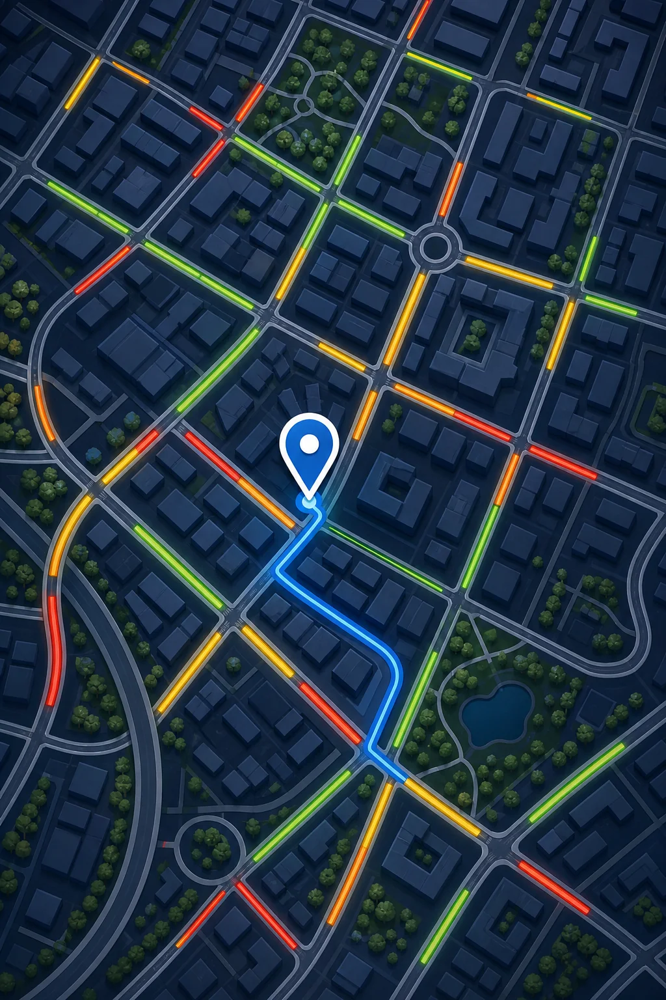

IA · Big Data · Aplicación multiplataforma
Parkify: predicción inteligente de aparcamiento
Solución orientada a facilitar la búsqueda de aparcamiento mediante análisis de datos urbanos, procesamiento de históricos y modelos predictivos.
Problema
Reducir el tiempo empleado en encontrar aparcamiento en vía pública.
Arquitectura
Aplicación Flutter conectada a servicios Firebase y a una capa de predicción basada en datos urbanos.
Tecnologías
Flutter, Dart, Firebase, Python, PySpark, pandas, SQL y Parquet.